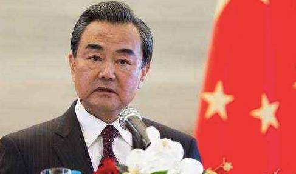

收录于合集
简
宫力
中共中央党校国际战略研究所所长, 教授、博士生导师;
门洪华
中共中央党校国际战略研究中心副主任, 教授、博士生导师;
孙东方
中共中央党校国际战略研究所博士后、讲师。
本文经国政学人公众号首发，转载请注明来处！
内容提要
外交决策机制在中国外交60年中发挥了重要作用，其自身也经历复杂的发展历程。毛泽东时期，中国外交决策机制初创，呈现出高度的封闭性、革命性，集权化色彩浓厚。邓小平时期，中国外交决策机制逐步改进，决策观念实现了从“革命”向“务实”的重大转变，决策结构突破了原有领域，经济部门、研究部门在外交决策中的作用日益重要。江泽民和胡锦涛时期，中国外交决策机制走向成熟，决策观念更加丰富，参与部门更加广泛。作者以外交决策的民主化、制度化、科学化为评估标准，梳理中国外交决策机制的发展脉络，分析各个阶段的变化及其特点，并做出相应的评价，以期从决策分析的新视角对当代中国外交的历史进程做出阐述和总结。
关键词
中国 外交决策 机制 历史分析

外交决策在国家政策制定日程上日益占据关键性地位。一个国家安全能否得到保障，经济能否得到发展，越来越取决于它与外部世界的关系，取决于其外交决策的正确与否，取决于在不确定情势下做出的战略抉择适宜与否。可以说，外交决策是一国外交的核心，是一项立足现实、面向未来的活动，事关国家在国际舞台上的地位和影响，甚至与国家兴衰存亡相关联。世界形势处于迅速变革之中，正确、适宜的决策必须依靠科学，[1]而科学化、民主化、制度化可视为科学决策的基本标准。中国外交决策在中国60年外交进程中起着决定性的作用，逐步走向民主化、制度化、科学化，其专业化水平有了大幅提高。尤其是，随着中国改革开放的深入和国家实力的强大，随着中国进一步融入世界，中国外交决策的重要性在提升、内容在扩展、影响力在增强，相应地，影响中国外交决策的因素在增多，决策参与因素也在增多，[2]决策咨询机制逐步发展，中国外交决策迎来一个新的发展时代。
本文的理论分析框架
外交决策机制是以担负对外政策职能的国家政治机构为核心，在政治系统其他重要因素的影响下，按照相应组织结构运作从而将来自外部环境的要求与支持转化为一个国家对外政策的组织体系，具体包括外交决策机构的设置、外交决策权限的划分、外交决策的制度等。[3]建立和完善外交决策机制的主要作用在于：科学分解外交决策职能，合理分工，集思广益，避免外交决策失误；协调各种政治力量和利益团体的利益矛盾和政策选择上的冲突；促进外交决策方式变革、决策方法和手段的现代化，尤其是在推动决策方式从传统的个人决策向集体决策转变方面发挥重要作用。[4]外交决策涉及决策环境、决策组织、决策机制、决策过程、决策者个人风格、决策国内外影响等诸多方面。一般而言，国家实力、国际环境及其主观认知、国内政治和社会因素、最高决策者的风格、[5]决策权的划分等是影响外交决策的最主要因素。这意味着，外交政策的制定实际上不是抽象意义上的国家，而是具体的政策制定者和具体的决策机构；外交决策不仅仅存在个人决策和集体决策的二元分野，[6]而是各种因素互动博弈的复杂过程。研究外交决策机制，不仅要分析决策主体的构成，还要考察决策机构的设置、决策过程的运作及各种社会政治因素的影响。只有通过对这些因素的系统研究，以决策机制科学化、民主化、制度化的演进为评估标准，才能了解各决策主体之间的相互关系，理解决策机制对政策内容的影响，从而厘清外交决策机制的变迁历程，就外交决策机制完善提出具有针对性的政策建议。本文拟以决策主体、决策机构、决策过程、影响因素为分析单元，以决策的民主化、制度化、科学化为主线，梳理中国外交决策机制的变迁历程，分析不同历史阶段的特点并做出相应评价，在此基础上对如何完善中国外交决策机制提出具体的政策建议。
中国外交决策机制形成（1949-1966年）
新中国处在东西方冷战的复杂国际国内环境之中，面临着一系列重大的战略选择。建国前后，为了肃清帝国主义在华特权，打破西方国家的政治孤立和经济封锁，争取国际社会的承认，为国民经济恢复、社会主义改造和建设创造有利的国际环境，中国做出了“另起炉灶”、“打扫干净屋子再请客”和“一边倒”的三大外交战略决策，确定了独立自主的新型外交方向。进入20世纪60年代，国际国内形势发生重大变化，两极格局仍在继续，但社会主义阵营和资本主义阵营各自的内部矛盾逐渐显露，在美苏关系缓和、中苏关系恶化、国内“左”的思想上升等因素的相互作用下，中国逐渐走上了与美苏两个超级大国同时对抗的道路。从整体上看，不管是建国初期的“一边倒”，还是20世纪60年代的“反两霸”，作为国际形势与中国内政的交集，对外应对两极世界、对内维护高度统一，始终是中国外交决策面临的双重刚性需求。与此同时，在特定的历史背景下，建国后，中共对国家事务的领导基本延续了战争时期的“一元化”原则，并建立起集权化的政治体制。在多种因素的促动下，1949至1966年17年间，中国外交开始展开，并形成了一套颇具特色的决策机制。
1．中共中央政治局及其核心中央书记处（1956年之后是中央政治局常务委员会）掌握最高决策权。其运作方式主要是通过召开政治局会议，对外交战略、外交方针以及突发事件等重大问题集体做出决定。建国初期的中央政治局成员共15人，由七届一中全会选举产生，之后人员发生了一些变化。[7]中央书记处由毛泽东、朱德、刘少奇、周恩来、任弼时“五大书记”组成。[8]1950年10月27日，任弼时病逝，由陈云继任中央书记处书记。1956年，中共八大设立中央政治局常务委员会取代中央书记处的核心决策地位，由毛泽东、朱德、刘少奇、周恩来、陈云、邓小平、林彪7人组成。中央书记处则在中央政治局及其常务委员会的领导下，负责处理中央日常工作。为了协调各涉外部门关系、避免条块分割矛盾，1958年6月，中共中央建立外事归口管理制度，成立中央外事小组，直接隶属于中央政治局和书记处，并明确规定：对大政方针和具体部署，政府机构及其党组有建议之权，但决定权在中央。中央外事小组由6人组成，外交部长陈毅任组长，其它成员为王稼祥、张闻天、刘宁一、廖承志、叶季壮。[9]其中陈毅时任中央政治局委员，王稼祥时任中央书记处书记，其他4人均为中央委员。[10]
2.党、政、军等涉外机构执行中央决定，并就一些重大问题向中央做出建议，其主要领导作为中央政治局委员参与外交决策。建国后，中国外交的体制框架逐步形成，党、政、军等涉外机构陆续建立，为中国外交的全面展开提供了强有力的支持。但从决策层面来看，中联部、外交部等部门承担的更多的是为中国外交决策服务的职责。1953年3月，中共中央通过《关于加强中央人民政府系统各部门向中央请示报告制度及加强中央对于政府工作领导的决定》，要求政府工作中一切重要的方针、政策、计划和重大事项均须事先请示中共中央，经中央批准后方能执行。[11]
1954年9月，中共中央成立中共中央军事委员会，在中央政治局和中央书记处领导下，全面领导军事工作。在这种体制下，一方面，外交部等部门的功能边界受到限制，主要是对国际形势和各国情况进行调查研究，及时掌握重大动向，为中央制定外交战略、方针政策提供情况和建议。与此同时，这些部门的主要领导大都兼具政治局委员的双重身份，能够直接参与到外交最高决策的讨论与制定中。特别是在党内民主正常时期，这种来自多部门、多渠道的决策信息和建议能够直达决策高层，较好地形成合力。如1954年中国接到参加日内瓦会议的邀请后，外交部会同有关方面进行了深入研究，由政务总理兼外交部长周恩来起草了《关于日内瓦会议的估计及其准备工作的初步意见》，就中国在日内瓦会议上采取的方针，以及在朝鲜、印度支那问题上的对策等向中央做出建议。[12]3月2日，刘少奇受毛泽东委托，主持召开中央书记处会议（毛泽东正在杭州主持起草宪法），讨论、批准了该意见。3月3日，中国政府表示接受邀请，并派出全权代表参加日内瓦会议。
3. 驻外使馆、新华社海外分社、军情机关等以“内参”形式向最高决策层上报一手信息，间接影响决策。这一时期，中国外交决策的信息渠道也逐步确立。主要是驻外使馆、新华社海外分社、军方派出机构对国际形势、重大事件以及各国内部情况等进行及时追踪，并以“内参”形式分别报送中央主要领导。当时，新华社上报材料就有《内部参考》、《情况反映》、《参考消息》等多种形式。这些一手信息的参考价值很高，在很大程度上影响高策决策。如1956年6月，“波兹南事件”爆发后，驻波使馆编写了《对波兹南武装挑衅事件的看法》的报告，《内部参考》则刊登了新华社驻华沙记者谢文清发出的长篇通讯，深入分析了引发事件的原因主要是波兰党和政府在工作中存在的缺点和困难，并提出波兰领导人有能力克服这些问题，形势正在好转。[13]这两份材料影响到毛泽东对事件的判断，主要是波兰内政问题而不是“马上脱离社会主义阵营、加入西方集团”，[14]从而为阻止苏联出兵、妥善解决波兰事件发挥了重要作用。从总体上说，这一时期的中国外交决策呈现出高度集权化的基本态势，核心权力集中掌握在中央高层，毛泽东具有“最后决定权”。但同时，也存在另外两个机制（党内民主机制和“毛—刘—周”体制），并发挥了重要作用。首先，毛泽东个人色彩浓厚，但党内民主机制仍然发挥作用，个人意见不能否定集体决定。如出兵朝鲜的决策就经历了复杂的过程。
朝鲜战争爆发后，1950年10月1日，金日成向中国求援，毛泽东决定出兵。但在10月2日召开的中央书记处会议上，意见出现分歧，多数人不赞成出兵。尽管毛泽东已经有了个人的主张，但仍然服从了书记处的集体决定，搁置了准备向斯大林发出的关于中国出兵的电报，并将多数人的意见通过苏联驻华大使罗申转告斯大林。[15]10月4日，中央召开政治局扩大会议就出兵问题进行讨论。会议充分发扬民主，毛泽东认真听取了各种意见。经过反复权衡、讨论，直到10月5日下午，会议才做出决定，由彭德怀率军入朝。之后，由于苏联不准备派出空军，中国出兵决策再次出现波折。10月12日，毛泽东电告赴朝部队“原地进行训练，不要出动”，[16]并急邀高岗、彭德怀赴京商谈。10月13日，中央召开政治局紧急会议，再次对是否出兵的利害关系进行讨论。会议决定，即使苏联不出空军支援，也必须立即出兵援朝。10月18日，中央再次召开会议，最终确定志愿军于19日入朝作战。其次，“毛—刘—周”体制确立。一般的观点认为，“毛—周”体制是中国外交的核心，毛泽东是最高决策者，周恩来参与决策并具体操作。但从决策层面来看，这一时期刘少奇的作用要高于周恩来。首先，建国后，刘少奇在党内的地位仅次于毛泽东。毛泽东休假、外出期间，由他代理主持中央工作。中共八大后，毛泽东退居二线，中央一线工作主要由他领导，主持中央政治局会议。1959年，他又当选为国家主席，同时担任国国防委员会主席，成为继毛泽东之后的第二任国家元首。
1962年“七千人大会”后，刘少奇实际上开始全面主持中央日常的党政领导工作。同时，刘少奇还是新中国外交的主要奠基人之一。建国前夕，刘少奇作为毛泽东的“特使”出访苏联。建国后，他又长期主管中共的党际外交工作，[17]三次访问苏联。对于冷战格局下，处理同社会主义国家党的关系，特别是中苏两党、两国关系发挥了至关重要的作用。这样，在中国外交高层决策中，实际上就形成了以“毛—刘—周”为主导的核心体制。毛泽东侧重外交战略谋划，刘少奇负责党际外交，周恩来负责国家外交。 中国外交决策机制在曲折中发展（1966-1976年）1966年爆发的“文化大革命”使中国的正常秩序受到猛烈冲击，中国高层决策机制随之发生巨大变化。
一是毛泽东个人专断日益严重，对党内不同意见上纲上线，导致中央决策层的民主生活极不正常；
二是由于毛泽东明确否定了刘少奇、邓小平等中央一线领导人的工作，致使中央政治局和书记处的地位一落千丈，形同虚设；
三是在中央文革小组由于受到毛泽东的信任，权限越来越大。
1966年下半年中央文革碰头会取代政治局会议，讨论和处理重大问题，并由周恩来总理向毛泽东汇报，但具有特殊身份的中央文革小组副组长江青也向毛泽东“吹风”，中央文革小组成为毛泽东的参谋班子。这种局面一直持续到1969年。当时，中国决策层出现以周恩来为代表的务实力量，以及林彪、江青两个集团为代表的“极左”势力，他们都对毛泽东负责。毛泽东则处于仲裁者的地位。在这种情况下，中国外交工作出现了严重混乱。1967年8月，“王八七讲话”[18]传达后，外交部大乱。8月16日，造反派把当时主持外交部日常工作的副部长姬鹏飞，乔冠华关押进地下室，夺取了外交部的主要领导权力。中国外交机构一度失控，造反派听命于中央文革，绕过主管外交的周恩来，也不请示毛泽东，开始以外交部名义对外发号施令，造成恶劣的影响。到1969年春，经过不懈的努力，中国外交机构的正常秩序得以初步整顿和恢复。1969年4月，中共九大在北京召开，选举出新的中央委员会和中央政治局。至此，中央文革碰头会取代中央政治局会议的反常情况终于结束，但由于中央文革和林彪集团的多名重要成员进入了政治局，从而使中国最高决策层的情况仍然十分复杂。另外，此时中央政治局虽已恢复主持中央正常工作，并能够讨论一些重要问题，比1966-1969年期间的情况要好得多，但其拥有的权限与“文革”之前相比仍有较大的差距。主要是集体领导受到很大削弱，毛泽东已很少参加政治局会议，但政治局几乎所有的重大决策均需请示他，并经他批准后才能实施。
在上述背景下，中国高层外交决策程序如下：1. 中国外交部、政策研究部门、新华社以及军方分别向中央及毛泽东、周恩来等重要领导人报送外交和军事动态（重点是美国和苏联）的分析意见和建议，以及有关国际形势、美中苏关系的内部参考材料、外电报道。虽然由于“文革”的特定环境，有些材料不甚准确或投其所好，但总的说来，这些材料反映的情况和有关意见有相当的参考价值。
2. 周恩来具体主管外交工作（他的主要助手有叶剑英、黄华、章文晋、熊向晖等），听取外交部门的有关汇报，经常对外交部提出的有关方案和意见、建议做出批示，有相当的权限，并在对外政策和策略的制定方面拥有较大的发言权（中美关系解冻过程中，中方给美方的口信都是以他的名义发出的），但遇重要问题需在政治局会议上提出讨论，并经常向毛泽东汇报、请示。
3. 中央政治局就一些重大问题进行讨论并做出一些决定，但需得到毛泽东的最后批准。在决定缓和中美关系的过程中，中央政治局曾多次召开会议商讨中美关系问题，制定有关政策和策略（例如，1969年月12月，中央政治局在京成员经过商讨，同意外交部关于释放误入中国领海的美国游艇两人，向美方做出了一个姿态；1970年2月12日，中央政治局会议讨论修改了参加第136次中美大使级会谈中方代表的发言稿，使中方发出的信号更加明确；1970年5月16日，为抗议美军出兵柬埔寨，中央政治局讨论了外交部的建议，决定推迟原定5月20日举行的中美华沙会谈；同年6月16日，中央政治局商定再次推迟中美华沙会谈；1971年5月26日，中央政治局会议拟定了中美预备性会谈的八点方针及对策；1972年3月1日，中央政治局会议审议了中美会谈的情况），并将结果上报中央主席毛泽东、副主席林彪批阅。毛泽东对此积极过问，有大量重要批示，林彪主管军队不主管外交，对此很少有具体批示。
4. 毛泽东从战略上把握对外关系的大政方针，批阅有关对外政策的重要文件，经周恩来组织落实其外交战略部署，并有最后决定权。例如，在是否邀请美国乒乓球队访华问题上，毛泽东经过反复思考否定了外交部、国家体委及周恩来关于暂不邀请的意见，决定立即邀请。从总体上说，这一时期中国外交决策呈现出如下几个特点：
第一，决策权过分集中于毛泽东个人，政治局、外交部、政策研究部门未能充分发挥应有的作用。如缓和中美关系的最初设想不是自下而上，而是自上而下产生的。具体地说，就是最高领导人有了初步想法，然后让有关部门探索可行性。这显然不利于决策的民主化、科学化。所幸的是，1969年以后，毛泽东在对外交方面的重要决策大体正确。否则，结果将有很大不同。
第二，周恩来和外交部、军方、新华社等有关部门提出的意见和参考材料对中央政治局和毛泽东做出重大决策亦有相当的影响力。如周恩来关于中国乒乓球队应参加第31届“世乒赛”的报告；外交部关于美军侵柬中国应推迟中美会谈，毛泽东应发表声明的建议（“五·二〇声明”由外交部、新华社、人民日报为毛泽东起草，经毛泽东审定、批准发表）；军委四位副主席关于国际局势的分析意见（其中军委副主席叶剑英和协助安排讨论的总参二部副部长熊向晖后来还直接参与了中美会谈）；乒乓外交期间新华社向毛泽东提供的外电报道，各方反应等参考材料（其中最为详尽的是内部刊物《参考资料》，当时为每天两版），对中央政治局和毛泽东下最后决心推动中美关系解冻起到很大的作用。
第三，“毛-周”体制的确立。随着刘少奇被打倒，“毛-周”体制成为中国外交决策的核心。总的来说，毛泽东周二人配合默契，但也有认识不一致的时候。其中有两次大的意见分歧。
一是1973年6月，勃列日涅夫访美，并同尼克松签署了《美苏关于防止核战争协定》。在这种背景下，外交部内部刊物《新情况》发表题为《对尼克松- 勃列日涅夫会谈的初步看法》的调研文章，认为美苏会谈所表现的特点是“欺骗性更大”，“美苏主宰世界的气氛更浓”。周恩来对这篇文章极为赞赏。但毛泽东却认为这“是看表面，不看实质”。在毛泽东看来，美苏表面上的合作，掩盖不住实质上争夺，而且美国的战略重点没有东移,仍在欧洲，“欧洲年嘛！人家自己讲的嘛？”[19]按着毛泽东的这种分析，中国仍能够利用美苏之间的矛盾并取得周旋的余地。7月5日，周恩来在中央政治局会议上作了检讨，随后又召集外交部开会，起草了《〈新情况〉一五三号错误何在？》一文，报送毛泽东，得到毛泽东的谅解。
二是1973年11月，在基辛格第六次访华结束后，毛泽东根据不可靠的汇报，认为周恩来在中美会谈中在台湾问题上的立场太软。在此情况下，中央政治局于11月底至12月初连续开会，讨论这一问题。周恩来受到批评．江青等人借机上纲说这是“第十一次路线斗争”，井攻击周恩来是“错误路线头子”，是“迫不及待”地要取代毛泽东。毛泽东在了解了会议情况后，一方面认为会议开得好，另一方面又认为江青做得太过分，指出：“有人讲错了两句话。一个是讲十一次路线斗争，不应该那么讲，实际上也不是”，“一个是讲总理迫不及待．他（指总理）不是迫不及待，她自己（指江青）才是迫不及待”。 [20]至此，周恩来度过了危机。从毛泽东、周恩来的两次分歧来看，在第一次的问题上，毛泽东对美苏关系和美国战略重点的判断比周更为准确。毛泽东的见解构成了中国对美缓和的政策基础。在第二次的问题上，则是毛泽东的失误。他误解了周恩来，才导致了政治局对周恩来的批评．但即便在这种时候，毛泽东也从未想要打倒周恩来，而只是要批评周恩来的所谓“错误”，正因如此，当江青趁机向周恩来发难时，毛泽东又出面保护了他。
第四，林彪、江青集团对外交决策有微妙影响。在中美关系缓和的问题上，一方面，他们对此心存不满，认为不应该向“美帝”低头，同时也不愿看到周恩来在此过程中增强在党内的地位。但另一方面，他们也清楚，缓和中美关系是毛泽东亲自决定的，所以他们也不好公开反对。不过，由于有这两股势力在中国决策层内的存在和制约，周恩来等人在讨论和贯彻缓和中美关系决策之时，一直都小心翼翼，如履薄冰。即便如此，一有风吹草动，周恩来、邓小平（在周恩来患病后代之主持对美外交谈判）等人仍不免受到极左派的攻击和暗算。例如，在1974年批林批孔中，江青等人一再借批判所谓历史上的“大儒”来影射周恩来搞“远交近攻”的政策。在1976年“批邓、反击右倾翻案风”中，江青借机发难，在一次高干会上说：“邓小平在外事问题上走得相当远了……关于台湾问题邓小平拍布什的马屁”。江青还攻击邓小平“是个汉奸，代表买办资产阶级”。
中国外交决策机制逐步改进（1976-1989年）
随着1976年“四人帮”垮台、1978年中共十一届三中全会召开，中国实现了历史性转折，进入改革开放的新时期。一方面，实现了由以阶级斗争为纲向以经济建设为中心的战略转移。另一方面，逐步改变了原来认为战争危险迫近的看法，把和平与发展作为时代的主题，进而做出了一系列外交战略决策。在这些因素的促动下，中国外交决策机制逐步改进，呈现出一系列的新变化。
1．中国外交决策观念发生重大变化。以邓小平为核心的第二代中央领导集体扭转了长期以来“左”的思想对中国外交决策的强烈影响，确立了中国外交的核心目标是服务于、服从于国家的根本利益。以经济建设为中心、为现代化建设创造良好的外部环境成为中国外交决策的着眼点。在此背景下，1982年中共十二大实现了从“一条线”到不结盟、全方位的和平外交战略的巨大转变。中国不再以意识形态划线，主张求同存异，寻求双方利益的共同点。中国与美苏同时保持良好和趋于良好的关系，并与其他国家逐步确立友好合作关系，开创了“无敌国”外交、全方位外交的新局面。中国外交的成功转型，极大地促进了中国的发展。1989年春夏的“北京风波”之后，面对严峻的国内外形势，邓小平提出了“韬光养晦、有所作为”的战略方针，坚持埋头苦干，不扛旗，不当头，不打头阵，朋友要交，心中有数，其根本目的还是要在坚持原则的基础上，维护中国经济发展和改革开放的大局。
2．外交决策开始突破政治、军事、安全等传统领域，外交部及对外经济部门在决策中的地位日趋重要。观念的变化引起结构的变化。随着改革开放的展开，中国外交体制呈现出两种新的发展趋向。
一是原有的体制结构重心发生位移，外交部在对外工作中居于核心位置。一方面其职能发生延伸，在原有建议、执行的基础上，进一步拓展为协助中央和国务院统一掌管外交事务、制定国家对外政策，并代表国家和政府贯彻执行；代表国务院就涉外方针、政策的实施进行协调等。[22]另一方面，这一时期，中国外交超越意识形态，冷战时期以党际外交推动国家外交（主要是对社会主义国家）的模式趋于淡化，对外交往更多的体现在国家层面，这就使得外交部的工作面更加广泛。到1989年，同中国建交的国家已经达到133个。[23]因此，在80年代国务院两次精简机构中，外交部不“简”反增，司局级机构增加到37个，部机关行政编制达到2526人，[24]成为国务院第一大部，其重要性不言而喻。
二是体制结构逐步健全，对外经济部门异军突起。随着外向型经济的发展，经济关系成为中国外交决策的核心要素之一。中国开始更多地参与到国际市场，1978年至1990年，中国进出口总额占国内生产总值的比重由4.7%、5.2%增加到17.2%、14%。[25]在此背景下，1982年由进出口管理委员会、对外贸易部、对外经济联络部和外国投资管理委员会合并而成的对外经济贸易部作用突显，全面负责拟定国家对外经济贸易发展战略和规划，研究和贯彻对外经济贸易方针政策，并对全国对外经济贸易实行宏观控制和经济调节。[26]与此同时，为了适应中国外交多样化的需求，中共中央、国务院又增设了一些新的机构，如国务院港澳办公室、国务院外事办公室等。中联部也将工作重点调整为通过党的关系和群众团体的渠道，促进经济、科技合作，为中国争取较长时期的和平环境。
3．外交决策的信息渠道增多，体制内的研究、咨询机制初步形成。这一时期，中国外交决策的信息渠道也打破了原有的单一结构，参与外交决策的行为体逐渐增多，科学化的趋势初步显现，其中最为显著的就是体制内一批研究部门、咨询部门的相继建立。根据中共中央关于建立一批国际问题研究机构的指示，1977年，中国社会科学院成立，国际片设立世界经济研究所、情报资料研究室、世界政治研究所、美国研究所、日本研究所、西欧研究所等研究机构。之后，原属中联部的苏联东欧研究所、西亚非洲研究所和拉丁美洲研究所又先后并入社科院。1977年中共中央党校复校后，成立国际政治教研室、世界经济教研室等机构，开始进行国际问题的教学、科研工作。1979年，国务院成立中国国际问题研究中心。同年，隶属军方的中国国际战略学会成立。1980年，隶属安全部的中国现代国际关系研究所成立。总的来看，这些机构在成立之初虽然还尚未达到直接影响高层决策的“思想库”的高度，但为外交决策服务的功能设定已经非常明显，其研究成果和建议成为高层决策的重要信息源，并为日后中国外交决策的科学化打下了坚实的基础。今天，这些机构及其主要人员已经在中国外交决策中扮演了极为重要的“智囊”角色。从总体上看，在特殊的历史背景下，这一时期中国外交决策仍有集权化色彩，但开始呈现民主化、制度化、科学化的发展趋势。
第一，邓小平是中国外交决策的核心，陈云、李先念等中顾委成员的意见对他亦产生很大影响。重大问题由邓小平直接决策推动，外交部等相关部门贯彻执行。如在中美建交的谈判中，因台湾问题多次出现波折。邓小平在得知卡特总统希望加速中美关系正常化谈判进程后，多次强调要“抓住这个时机”，“谈的时候不要把门关死”。 [27]1978年11月，中央工作会议期间，邓小平又反复强调，中美建交“这确实是个大局”。在向军方通报政治局常委正在考虑的问题时，第一条就与中美建交谈判有关。在中美谈判的最后关头，对于最棘手的对台军售问题，邓小平表示“以后我们双方再来讨论”，这对于谈判取得最终突破、中美成功建交，发挥了决定性的作用。又如1982年3月24日，苏联最高领导人勃列日涅夫在塔什干发表讲话，透露出改善中苏关系的愿望。邓小平注意到这个讲话所传递的信息，并打电话到外交部要求立即对勃列日涅夫的讲话做出反应。按照邓小平的指示，钱其琛以外交部发言人的身份做出了积极的回应，提出要听其言、观其行[28]，并表明了中方的态度：“在中苏关系和国际事务中，我们重视的是苏联的实际行动”。[29]这个声明在国际上引起很大反响，成为中苏关系解冻的先声。
第二，中国外交决策的民主化趋势已有所显现。尽管邓小平掌握最高决策权，但决策形式、决策程序较之毛泽东时期已经发生了很大的变化。邓小平作风民主，最高决策层内可以讨论，可以争辩，可以发表不同观点。
第三，中国外交决策加快了制度化建设的步伐。这不是对原有意义上的简单恢复，而是从更高层面带有反思性的一种建构。国家决策机构基本健全，党、政、军三大板块在决策方面的作用基本匹配，研究、咨询机制也初具规模，更多的行为体参与到外交决策中来，中国外交决策机制逐步趋向系统化、制度化。如外交部长吴学谦在80年代建立了外交部每天早晨的吹风会制度，有力地保证了部内各部门领导及时掌握国际国内动态，对紧急问题做出快速、及时地处理，并为中央就一些重大问题的决策提供参考。1983年，为适应国际形势发展的需要，外交部建立了发言人制度，发言人一般由外交部新闻司司长及副司长担任。该制度作为中国外交的一个重要窗口一直延续到今天，极大地推动了中国与世界的交流。一方面，使中国外交决策更加准确、有效地传递到外部世界，使世界能够及时地了解中国就某些重大问题的观点和立场。另一方面，也强化了中国外交决策的自我约束，有力地保证了中国外交决策的一贯性和连续性。
第四，中国外交决策的科学化程度有所提高。随着国际政治、国际关系学科的起步以及人才培养机制的建立，外交队伍的整体素质、专业化程度也不断提高，更多的理论与方法开始运用到外交实践中，为外交决策从经验化向科学化的提升提供了重要的智力保证。
中国外交决策机制走向成熟（1989-2009年）
20世纪90年代以来，国际形势再次发生重大变化。冷战结束，“一超多强”格局初现，世界多极化趋势逐步发展，经济全球化深入发展，科技革命加速推进，霸权主义和强权政治依然存在，传统安全威胁和非传统安全威胁相互交织。与此同时，中国经济以年均增长9.8%的速度高速发展，综合国力极大提高，2007年中国GDP总量已跃居世界第3位，2008年达到4.4万亿美元，中国作为一个正在崛起的大国已经成为一个不争的事实。中国与世界的关系更加紧密，越来越多的参与到国际事务中，并发挥了重要的作用。这种形势与“身份”的改变，极大地促动着中国外交向纵深发展。这一时期，中国外交决策面临着更加复杂的形势，呈现出一系列新的变化。
1．最高决策层的视野更加开阔，决策观念进一步丰富。从观念层面来看，这一时期中国外交决策开始强调有所作为，积极融入国际社会。1992年中共十四大后，中国改革开放进入新的历史阶段，构建社会主义市场经济体制成为国家生活的主题。进一步扩大对外开放，加快中国经济与国际市场的体制接轨，成为中国外交的中心任务之一。2001年，中国正式加入世界贸易组织（WTO），极大地促进了中国的经济发展，全方位、立体化的对外开放格局形成，中国在更大范围、更广领域和更高层次上参与到国际经济合作与竞争中。中共十六大后，随着“走出去”战略的广泛实施，中国与世界的前途命运更加紧密地联系在一起。高举和平、合作、发展的大旗，寻求共同利益，促进共同发展，成为中国外交决策新的着力点。在这种背景下，2005年，胡锦涛在联合国成立60周年首脑会议上，首次提出“和谐世界”的新理念。中共十七大又做了进一步阐述：政治上相互尊重、经济上相互合作、文化上相互借鉴、安全上相互信任、环保上相互帮助。尽管“和谐世界”是一个长远的目标，却充分体现出中国外交在更高层面的一种建构。在这一理念的引领下，对内坚持科学发展、和谐发展，对外坚持和平发展成为中国外交决策的三大基本维度。
2．外交决策的参与部门更加广泛，“大外交”决策机制基本建立。随着对外开放的不断深入，这一时期中国外交决策又突破了经济领域，广泛的涉及到能源、科技、文化、教育、农业、环境等诸多方面，参与外交决策已不再是外交部、商务部、国防部等传统部门的专有权限。据笔者统计，目前国务院直属的27个部委，均设有国际司等处理涉外事务的职能部门。中国“大外交”决策时代已经到来。2004年11月，国务院成立部级涉外紧急突发事件协调小组，由外交部长李肇星任负责人，[30]对于应对涉外紧急突发事件，协调各部门间的关系，保护中国的海外利益起到了重要作用。另外，在外交决策中，地方政府的影响力也在逐步增加。这一时期，中央政府将更多的权力下放到地方，这使得地方政府可以制定该地区的出口补助，支配部分外汇收入。加入WTO后，由于出口贸易的发展和外资的大量涌入，地方政府的利益就更加明显，因此，在中央决策与地方表达的博弈中，地方政府会对中央决策施加较大的影响。特别是中央决策高层大都具有从事地方工作的经历。这些经历与体会也会使他们在决策中充分考虑到地方的利益诉求。
3．决策咨询渠道更加完善，“官方-学术界- 民间”格局基本形成。这一时期，一批体制内的思想库相继建立，在这一格局中发挥主导作用，其优势主要在于能够全面及时地掌握信息（特别是大量涉密信息），对重大问题能够做出准确或较为准确的判断，其研究成果及决策建议通过特殊渠道能够直达决策层。例如，2003年中共中央党校前常务副校长、改革开放论坛前理事长郑必坚访美后，向中央建议就“中国和平崛起发展道路”进行研究，引起决策高层的高度重视。2003年1月30日，胡锦涛做出批示，要求由中共中央党校牵头，对此开展研究。在此过程中，郑必坚在不同场合多次发表关于中国和平崛起道路的演讲，引起国内外的广泛关注和热烈讨论。在此基础上，2005年，在中央外宣办的组织、主持下，多位专家经过多次讨论、酝酿，最终形成并发表《中国的和平发展道路》白皮书。2007年，党的十七大报告明确提出：“中国将始终不渝走和平发展道路。这是中国政府和人民根据时代发展潮流和自身根本利益做出的战略抉择”。[31]学术界主要是指近年来高等院校、科研院所等学术机构的兴起，国际问题成为学术研究的热点。目前，全国有50多所院校建立了国际关系学院，一批硕士点、博士点相继设立，国际关系、国际政治的学科体系已渐成熟。这些学术机构通过组织会议、论坛等经常形式，广泛邀请体制内机构及其人员参与，积极开展对中国外交的讨论，充分实现了官方与学术界的良性互动。民间主要是指民意、媒体等越来越成为影响中国外交决策的重要因素。[32]如1999年“炸馆”事件、2001年“撞机”事件后，民意及媒体的反应在一定程度上影响到中央高层对事件的处理。特别是随着信息技术的普及，网络成为民众对中国外交进行行为表达的主阵地。海洋权、中美关系、台湾问题、中日关系、朝核危机等重大问题在网络上的关注程度居高不下，其中也有不少的真知灼见。中国领导人也经常上网，并与网民进行交流，这充分说明中国外交决策已经开始关注到社会层面。
总的来看，这一时期中国外交决策呈现出如下特点：
第一，民主化程度进一步提高。外交决策的制定权和影响力从过去基本上集中于个人层面逐级转移到参与外交决策过程中的各种组织机构中来。[33]在“大外交”体制下，集体决策、分工负责的模式已经成为中国外交决策的主导，各涉外机构的专业化分工越来越细化，职能也越来越明确，基本覆盖到政治、经济、军事、安全、文化等诸多领域。这种民主决策机制的存在，使得中国外交的决策面进一步拓展，决策过程也更加丰富。特别是在处理重大问题、应对突发事件时，这种来自于多行业、多学科、多渠道的认知，能够为及时有效的决策提供强有力的支持。
第二，制度化程度进一步提高。为了加强对外事工作的统一领导，提高外交决策的整体性、有效性，避免各涉外部门条块分割矛盾，中国外交制度化建设进一步加快，其中最为突出的是决策机制开始围绕中央外事领导小组（中央国家安全领导小组）全面展开。该机构是中共中央政治局领导外事、国家安全工作的议事、协调机构，由多个部门的主要负责人组成。除国家主席、国家副主席担任正、副组长外，成员包括负责涉外事务的国务院副总理或国务委员，外交部、国防部、公安部、国家安全部、商务部、港澳办、侨办、新闻办的负责人，以及中宣部、中联部的部长，军方的高级将领等。1998年8月，中共中央、国务院撤销国务院外事办公室，成立中央外事办公室（简称“中央外办”）。中央外办作为中央外事工作领导小组办事机构，列入中央直属机构序列。2000年9月，中共中央组建中央国家安全领导小组，与中央外事工作领导小组合署办公。中央外办同时作为其常设办事机构，两块牌子，一套机构。其职责主要是协调中央各部门和国务院各部门之间的涉外工作，就重大问题进行调研，制定相关政策，并向中央做出决策建议。中央外办自成立以来，对中国外交决策发挥了重大作用，实际上成为各参与部门的核心协调机构，现任中央外办主任由国务委员戴秉国担任。
第三，科学化程度进一步提高。思想库、学术界的作用明显提升，在中国外交决策中扮演着日益重要的角色。这些机构及其人员不仅为中国外交出谋划策，提供最佳理论、策略、方法、思想，并以自己的“创造性思维”来为政府实际决策提供相应依据，对决策产生有利影响。与此同时，近年来，有关涉外部门也建立了相应的定期会商机制，加强与思想库、学术界的咨询及委托研究活动。在处理重大外交事件的过程中，有关部门注意保持外交和内部咨询渠道的畅通，注意事后总结经验教训，改进工作机制，并选用部分专家参加研究或决策制定。[34]特别是，中共中央政治局集体学习制度建立后，一些国际政治、国际关系领域的专家学者给最高决策层上课，其观点、认知对外交决策也产生了间接的影响。中共中央党校也加大了对党的中高级干部培养世界眼光和战略思维的力度，涉及国际政治和世界经济的省部级、司局级专题研讨班逐年增多。另外，随着人才培养机制的进一步完善，参与决策的体制内人员专业化素质大幅度提高，大都接受过国内外一流大学的学院化训练，具有在国外工作、学习、访问的经历，外语能力和对国际事务的认知水平都很强，有的还获得了相关专业的硕士、博士学位。这对于推动中国外交决策的科学化进程发挥了重要作用。
结 论
新中国成立60年来，中国外交决策机制作为中国外交的重要机制，经历了一个复杂而漫长的发展历程，其观念、结构、体制等发生了根本性的转变，呈现出由集权化逐步走向民主化、制度化、科学化的基本态势。毛泽东时期，中国外交决策机制初创，受国家生存、意识形态、政治体制等多重因素的影响，中国外交决策呈现出高度的封闭性、革命性，集权化色彩浓厚。邓小平时期，中国外交决策机制逐步改进，决策观念实现了从“革命”向“务实”的重大转变，决策结构也突破了原有领域，经济部门、研究部门在外交决策中的作用日益重要。江泽民和胡锦涛时期，中国外交决策机制走向成熟，决策观念更加丰富，参与部门更加广泛，外交决策不再局限于体制内循环，形成了决策中心和大学、思想库、媒体等外围之间在交往上的日益活跃及多层次联系管道建立的发展格局。[35]可以说，经过60年的发展，中国外交决策机制已经站在了一个新的历史起点上。当前，国际形势更加复杂，特别是在此次全球金融危机中，国际战略格局已经出现了一些新的变化。中国作为一个负责任的大国，其实力和国际影响力日趋提升，中国与世界的关系更趋深入。世界正在适应中国的崛起，中国也必须适应自身“身份”的变化，这就向中国外交决策提出了更高层此次的要求。与此同时，中国外交决策机制还存在不少的局限，如外交决策基本限于行政系统内，而且对行政系统的其他部门相对封闭。各自对上级负责，缺乏横向交流与协作，不利于对外形成合力等。[36] 为此，中国外交决策机制的建设步伐必须进一步加快。
第一，加强对外交决策的专门研究，推动决策学与外交学等多学科交融，在充分吸收国外经验的基础上，积极探索适合中国国情的机制、方法和途径。
第二，深化集体决策、分工负责模式，推动跨行业外交决策机制建设，打破体制内部门间的横向壁垒，倡导多部门的协同合作，整合外交人力资源和信息资源，更好地解决外交决策过程中“民主”与“集中”的关系问题。第三，加强外交决策外部资源体系建设，加快建立制度化的外交决策监督机制，对外交决策机构是否依法行使外交决策权，以及在执行外交决策过程中是否存在违法行为等进行监督，以保证外交决策的连续性与稳定性。同时，还要充分完善外交决策咨询体制，尽快实现国内发展咨询体系与外交咨询体系的对接，真正使外交决策统筹好国内、国际两个大局，进一步提高中国外交决策的民主化、制度化、科学化水平。
注释
[1] 宦乡：《宦乡集》，北京：中国社会科学出版社2002年版，第367-368页。
[2] 蓝普顿（David M. Lampton）指出，中国外交决策进程突出的特点是，参与决策的行为体在增加，个人、组织和地方官员更多地参与外交和国家安全的决策进程，而专业化、多元化、分散化（Decentralization）和全球化成为推动以上变化的重要因素。参见：David M. Lampton, ed., The Making of Chinese Foreign Policy and Security Policy in the Era of Reform, Stanford: Stanford University Press, 2001, p.4.
[3] 冯玉军：《俄罗斯外交决策机制》，北京：时事出版社2002年版，第69页。
[4] 赵晓春：《发达国家外交决策制度》，北京：时事出版社2001年，第17页。
[5] 外交决策权往往由最高领导人掌握，王沪宁指出，“决策的过程受决策者价值体系的制约”。参见王沪宁：《比较政治分析》，上海：上海人民出版社1987年版，第143-144页。
[6] 有的学者分析了集体决策和个人决策各自存在的优劣之处：集体决策意味着集思广益，有更多的信息和想法，可能有更多更好的选择方案，有错误也更有可能校验、校正，在正确性上拥有优势；个人决策则不受或少受其他意见的影响与制约，可能容易发挥个人的创造性。参见J. E. Russo、安宝生、徐联仓：《决策行为分析》，北京：北京师范大学出版社1998年版，第136-137页。
[7] 中共中央政治局委员高岗因反党分裂，于1955年3月被开除党籍，并撤销党内外各项职务。1955年4 月4 日，中共七届五中全会补选林彪、邓小平为中央政治局委员。
[8] 1950年年6月6日，中共七届三中全会批准陈云在任弼时病休期间代理中央书记处书记。
[9] 《中国共产党组织史资料》（中央卷）第九卷，北京：中共党史出版社出版2000年版，第628页。
[10]《中国共产党组织史资料》（中央卷）第五卷，北京：中共党史出版社出版2000年版，第41-43页。
[11] 中共中央文献研究室编：《建国以来重要文献选编》第四册，北京：中央文献出报社1993年版，第430页。
[12] 中央文献研究室编：《周恩来传（1949-1976）》上，北京：中央文献出版社1998年版，第556页。
[13] 沈志华、李丹慧：《1956年的波兰危机与中波关系—来自中国的档案文献和内部报道》，载《俄罗斯研究》2006年第3期，第46—47页。
[14] 逄先知、金冲及主编：《毛泽东传（1949-1976）》上，北京：中央文献出版社2003年版，第604页。
[15] 逄先知、金冲及主编：《毛泽东传（1949—1976）》上，北京：中央文献出版社2003年版，第118页。
[16] 中央文献研究室编：《建国以来毛泽东文稿》第一册，北京：中央文献出版社1987年版，第552页。
[17] 戴秉国：《刘少奇的党际关系思想与实践》，载《光明日报》1999年1月15日。
[18] 1967年8月7日，中央文革小组重要成员王力把外交部造反派代表找到钓鱼台面授机宜，煽动批判外交部长陈毅并向外交部夺权，这就是著名的“王八七讲话”。
[19] 《毛泽东同王洪文、张春桥的谈话纪要》，1973年7月4日。
[20] 1973年12月9日，毛泽东在会见尼泊尔国王后，分三批先后同周恩来、王洪文、唐闻生和王海容讲了上述内容。
[21] 《江青在打招呼会议期间擅自召集十二省、区会议上的讲话》，1976年3月3日。
[22] 《中国共产党组织史资料（中央卷）》附卷一（下），北京：中共党史出版社出版2000年版，第759页。
[23] 根据《中华人民共和国与各国建立外交关系日期简表》整理，参见外交部网站：http://www.fmprc.gov.cn/ chn/pds/ziliao/2193/ 。
[24] 《中国共产党组织史资料（中央卷）》附卷一（下），北京：中共党史出版社出版2000年版，第759页。
[25] 徐争游：《中国政府的职能和组织机构》，北京：华夏出版社1994年版，第298页。
[26] 《中国共产党组织史资料（中央卷）》附卷一（下），北京：中共党史出版社出版2000年版，第803页。
[27] 中央文献研究室编：《邓小平年谱（1975—1997）》上，北京：中央文献出版社2004年版，第417页。
[28] 钱其琛：《结束过去开辟未来——回忆邓小平同志关于实现中苏关系正常化的战略决策》，载《新中国外交风云》第五辑，北京：世界知识出版社1999年版，第2-3页。
[29] 钱其琛：《外交十记》，北京：世界知识出版社2003年版，第4页。
[30] 张历历：《外交决策》，北京：世界知识出版社2007年版，第258页。
[31] 胡锦涛：《高举中国特色社会主义伟大旗帜 为夺取全面建设小康社会新胜利而奋斗——在中国共产党第 十七次全国代表大会上的报告》（2007年10月15日），载《中国共产党第十七次全国代表大会文件汇编》，北京：人民出版社2007年版，第45页。
[32] 关于民意对中国外交决策的影响，请参见：Joseph Fewsmith and Stanley Rosen, “The Domestic Context of Chinese Foreign Policy: Does ‘Public Opinion’ Matter?”, in David M. Lampton, ed., The Making of Chinese Foreign Policy and Security Policy in the Era of Reform, pp.151-187.
[33] 郝雨凡、林甦主编：《中国外交决策：开放与多元的社会因素分析》，北京：社会科学文献出版社2001年版，第13页。
[34] 孙哲：《中国外交思想库：参与决策的角色分析》，载《复旦学报（社会科学版）》2004年第4期，第98页。
[35] 郝雨凡、林甦主编：《中国外交决策：开放与多元的社会因素分析》，北京：社会科学文献出版社2001年版，第156页。
[36] 张历历：《外交决策》，北京：世界知识出版社2007年版，第255页。
文章来源：《世界经济与政治》2009年第11期
筛选： 汪乐乐 编辑： 里仝
声 明
国政学人微信公众平台系非盈利学术平台。建立初衷是方便广大学人进行学术研究，促进学术的传播和交流，不做任何商业用途。如有任何权利问题，请直接与我们联系。